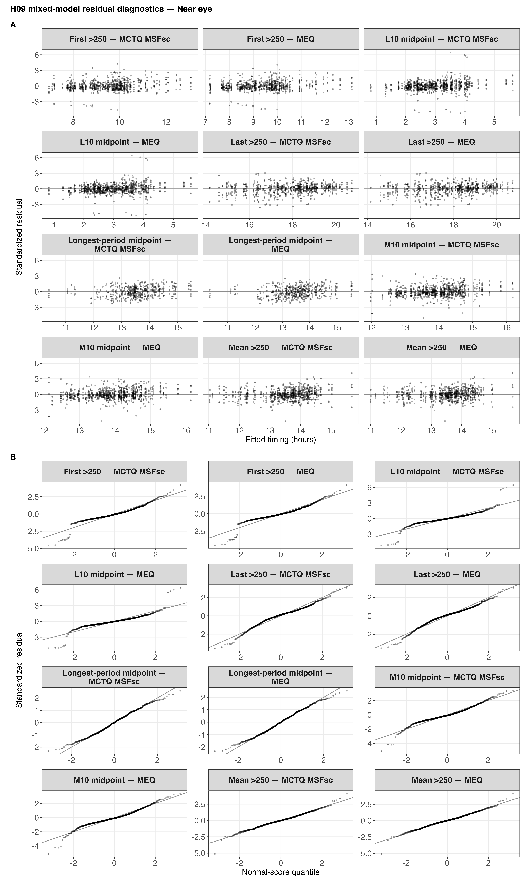
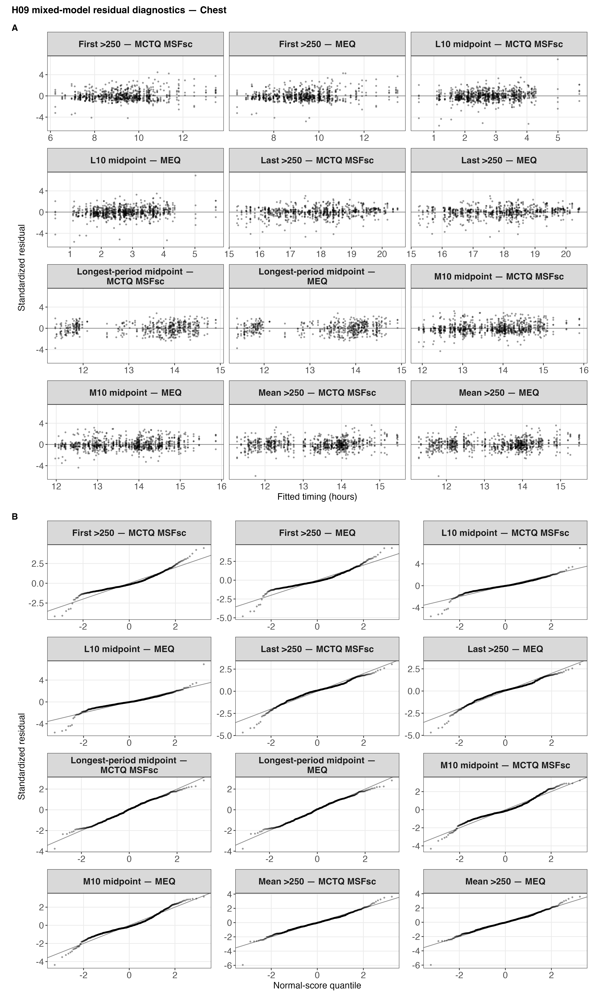

| Metric | Unit | Analysis unit | Definition |
|---|---|---|---|
| Midpoint of the brightest 10 hours | local clock hour | participant day | Local midpoint of the brightest supported 10 hours |
| Midpoint of the darkest 10 hours | local clock hour | participant day | Local midpoint of the darkest supported 10 hours; strict >16:00 values shifted by -24 hours |
| First light timing above 250 lx melEDI | local clock hour | participant day | First supported local timing above 250 lx melEDI |
| Last light timing above 250 lx melEDI | local clock hour | participant day | Last supported local timing above 250 lx melEDI |
| Midpoint of the longest continuous period above 250 lx melEDI | local clock hour | participant day | Local midpoint of the selected longest continuous period above 250 lx melEDI, restricted to exact-identifiable periods |
H09: Chronotype and timing of personal light exposure
MCTQ and MEQ associations with five registered timing metrics
Hypothesis and analytical question
The preregistered hypothesis was:
H9: Timing-based metrics are associated with chronotype (MCTQ, MEQ).
Chronotype was represented by the Munich Chronotype Questionnaire corrected midsleep on free days (MCTQ MSFsc) and the Morningness–Eveningness Questionnaire (MEQ). The analytical question is whether either construct is associated with the local clock timing of personal light exposure across repeated participant-days after accounting for study site. A participant-day is one participant’s eligible outcome on one local date.
The primary sensor position was near eye because it records light near the eyes during wear. The complementary chest sensor position was analysed separately and is not a measure of ocular exposure. Light intensity is expressed as melanopic equivalent daylight illuminance (melEDI). Effects are signed local-clock hours per stated increase in the chronotype score: positive values mean the timing outcome occurs later and negative values mean earlier. Because larger MCTQ MSFsc means later corrected midsleep while larger MEQ means greater morning preference, the two score directions must be read separately.
NoteAnswer in brief
Later MCTQ corrected midsleep was associated with later primary near-eye M10 midpoint, L10 midpoint, and first timing above 250 lx melEDI; greater MEQ morning preference was associated with earlier timing for the same outcomes. These conclusions use separate five-outcome false-discovery-rate (FDR) families. Uncertainty is reported with 95% confidence intervals (95% CIs). The clearest near-eye estimate was for first timing above 250 lx melEDI: +0.381 h per one-hour later MCTQ MSFsc (95% CI +0.146 to +0.616; FDR-adjusted p = 0.003) and −0.444 h per 10 points greater MEQ morning preference (95% CI −0.699 to −0.189; FDR-adjusted p = 0.001). Last timing and the midpoint of the longest continuous period were not supported. Complementary chest results broadly reinforced the first-timing pattern, and no chronotype-by-site interaction survived FDR adjustment. Structured sensitivity analyses supported the main directional interpretation, with explicit limitations for the unavailable longest-period dataset sensitivity and a few near-zero or precision-sensitive estimates.
Chronotype constructs and timing outcomes
MCTQ MSFsc and MEQ represent related but distinct constructs. A larger MCTQ MSFsc value denotes later corrected midsleep, whereas a larger MEQ score denotes greater morning preference. The verified aggregate calculated fields covered 186 participants. MCTQ MSFsc was complete for 185 participants and missing for one; MEQ was complete for all 186. The aggregate values were preserved exactly from their source, but item-level questionnaire responses were unavailable for independent score reconstruction.
The five registered participant-day outcomes were the midpoint of the brightest 10 hours (M10 midpoint), midpoint of the darkest 10 hours (L10 midpoint), first time above 250 lx melEDI, last time above 250 lx melEDI, and midpoint of the longest continuous period above 250 lx melEDI. M10 and L10 onset and offset were not analysed. Clock values were linearized because their observed support was adequately linear; night-time values used the specified negative-hour conversion where needed. No circular distribution was imposed solely because an outcome was clock-valued. The timing definitions and their support rules are documented in Preparation 04 and the model-ready fields in Preparation 06.
The gap-timing-unaware dataset is the dataset applying the 50%-per-hour and 80%-per-day coverage rules but not using the remaining gaps’ time of day in metric-specific support decisions. It can be contrasted once with the time-sensitive primary dataset; below, the latter is called simply the primary dataset.
Statistical approach
Each chronotype instrument was analysed separately. Participant-day Gaussian mixed models included fixed study-site effects and a participant random effect nested within site. This random effect represents remaining between-participant timing variation after site and chronotype are considered. The additive model estimated a study-site-adjusted average between-participant association and was compared with a site-only model. A separate chronotype-by-site interaction model allowed the chronotype association to differ by study site. Site-specific slopes were treated as descriptive unless the global interaction survived FDR adjustment.
| Instrument | Role | Formula |
|---|---|---|
| MCTQ MSFsc | Site only | timing_hour ~ site + (1 | site:Id) |
| MCTQ MSFsc | Average chronotype association | timing_hour ~ site + mctq_hour_centered + (1 | site:Id) |
| MCTQ MSFsc | Chronotype-by-site interaction | timing_hour ~ site * mctq_hour_centered + (1 | site:Id) |
| MEQ | Site only | timing_hour ~ site + (1 | site:Id) |
| MEQ | Average chronotype association | timing_hour ~ site + meq_10_centered + (1 | site:Id) |
| MEQ | Chronotype-by-site interaction | timing_hour ~ site * meq_10_centered + (1 | site:Id) |
The centered predictor names encode simple changes of origin and scale. mctq_hour_centered is each participant’s MCTQ MSFsc expressed in clock hours minus the participant mean (4.114 h); an increase of one unit therefore means one hour later corrected midsleep. meq_10_centered is the MEQ score minus the participant mean (52.860) and divided by 10; an increase of one unit means 10 MEQ points toward greater morning preference. Centering places the model intercept at the observed mean chronotype. It does not change the chronotype slopes, their confidence intervals, or their tests.
Each coefficient is a signed-hour estimand. Positive values mean the timing outcome occurs later per one-hour later MCTQ MSFsc or per 10 points greater MEQ morning preference; negative values mean earlier. The different score directions are therefore retained in every interpretation.
Four inferential families were kept distinct for each placement: MCTQ average associations, MEQ average associations, MCTQ-by-site interactions, and MEQ-by-site interactions. Each complete family used FDR adjustment across the five registered timing outcomes. Statistical significance was decided at FDR-adjusted p < 0.050 before formatting. All displayed intervals are 95% Wald CIs. The mean-timing sensitivity reported later was not added to these families.
Exact fitted samples
Primary near-eye fits used 131–141 participants, 478–816 participant-days and observations, 11,325.5–18,851.0 derivation hours, and nine sites, depending on the outcome and instrument. Complementary chest fits used 149–154 participants, 547–902 participant-days and observations, 12,980.0–20,891.8 derivation hours, and eight sites. Every estimate below reports its exact fitted sample.
| Metric | Instrument | Placement | Participants / days / observations / hours / sites |
|---|---|---|---|
| Midpoint of the brightest 10 hours | MCTQ MSFsc | Chest | 153 / 896 / 896 / 20752.4 h / 8 |
| Midpoint of the brightest 10 hours | MCTQ MSFsc | Near eye | 140 / 810 / 810 / 18711.7 h / 9 |
| Midpoint of the brightest 10 hours | MEQ | Chest | 154 / 902 / 902 / 20891.8 h / 8 |
| Midpoint of the brightest 10 hours | MEQ | Near eye | 141 / 816 / 816 / 18851.0 h / 9 |
| Midpoint of the darkest 10 hours | MCTQ MSFsc | Chest | 153 / 896 / 896 / 20752.4 h / 8 |
| Midpoint of the darkest 10 hours | MCTQ MSFsc | Near eye | 140 / 810 / 810 / 18711.7 h / 9 |
| Midpoint of the darkest 10 hours | MEQ | Chest | 154 / 902 / 902 / 20891.8 h / 8 |
| Midpoint of the darkest 10 hours | MEQ | Near eye | 141 / 816 / 816 / 18851.0 h / 9 |
| First light timing above 250 lx melEDI | MCTQ MSFsc | Chest | 153 / 797 / 797 / 18518.4 h / 8 |
| First light timing above 250 lx melEDI | MCTQ MSFsc | Near eye | 139 / 722 / 722 / 16716.3 h / 9 |
| First light timing above 250 lx melEDI | MEQ | Chest | 154 / 802 / 802 / 18634.7 h / 8 |
| First light timing above 250 lx melEDI | MEQ | Near eye | 140 / 727 / 727 / 16832.5 h / 9 |
| Last light timing above 250 lx melEDI | MCTQ MSFsc | Chest | 153 / 783 / 783 / 18263.8 h / 8 |
| Last light timing above 250 lx melEDI | MCTQ MSFsc | Near eye | 140 / 683 / 683 / 15900.8 h / 9 |
| Last light timing above 250 lx melEDI | MEQ | Chest | 154 / 787 / 787 / 18358.1 h / 8 |
| Last light timing above 250 lx melEDI | MEQ | Near eye | 141 / 687 / 687 / 15995.0 h / 9 |
| Midpoint of the longest continuous period above 250 lx melEDI | MCTQ MSFsc | Chest | 149 / 547 / 547 / 12980.0 h / 8 |
| Midpoint of the longest continuous period above 250 lx melEDI | MCTQ MSFsc | Near eye | 131 / 478 / 478 / 11325.5 h / 9 |
| Midpoint of the longest continuous period above 250 lx melEDI | MEQ | Chest | 150 / 549 / 549 / 13027.8 h / 8 |
| Midpoint of the longest continuous period above 250 lx melEDI | MEQ | Near eye | 132 / 482 / 482 / 11419.8 h / 9 |
| Participant-days and observations coincide because each fitted row is one participant-day outcome. | |||
Primary near-eye results
Both chronotype instruments showed the same substantive pattern in opposite score directions. Later MCTQ MSFsc was associated with later M10, L10, and first-above-250 timing. Greater MEQ morning preference was associated with earlier timing for those same three outcomes. The adjusted evidence did not support associations with last-above-250 timing or the midpoint of the longest continuous period.

| Metric | Instrument | Signed effect, h (95% CI) | Raw p | FDR-adjusted p | Fitted sample: participants / days / observations / hours / sites |
|---|---|---|---|---|---|
| Midpoint of the brightest 10 hours | MCTQ MSFsc | +0.205 (+0.045 to +0.366) | 0.010 | 0.017 | 140 / 810 / 810 / 18711.7 h / 9 |
| Midpoint of the brightest 10 hours | MEQ | -0.278 (-0.451 to -0.105) | 0.001 | 0.002 | 141 / 816 / 816 / 18851.0 h / 9 |
| Midpoint of the darkest 10 hours | MCTQ MSFsc | +0.276 (+0.118 to +0.435) | <0.001 | 0.003 | 140 / 810 / 810 / 18711.7 h / 9 |
| Midpoint of the darkest 10 hours | MEQ | -0.314 (-0.487 to -0.142) | <0.001 | 0.001 | 141 / 816 / 816 / 18851.0 h / 9 |
| First light timing above 250 lx melEDI | MCTQ MSFsc | +0.381 (+0.146 to +0.616) | 0.001 | 0.003 | 139 / 722 / 722 / 16716.3 h / 9 |
| First light timing above 250 lx melEDI | MEQ | -0.444 (-0.699 to -0.189) | <0.001 | 0.001 | 140 / 727 / 727 / 16832.5 h / 9 |
| Last light timing above 250 lx melEDI | MCTQ MSFsc | -0.025 (-0.264 to +0.214) | 0.811 | 0.811 | 140 / 683 / 683 / 15900.8 h / 9 |
| Last light timing above 250 lx melEDI | MEQ | +0.029 (-0.236 to +0.294) | 0.814 | 0.814 | 141 / 687 / 687 / 15995.0 h / 9 |
| Midpoint of the longest continuous period above 250 lx melEDI | MCTQ MSFsc | +0.161 (-0.113 to +0.434) | 0.227 | 0.284 | 131 / 478 / 478 / 11325.5 h / 9 |
| Midpoint of the longest continuous period above 250 lx melEDI | MEQ | -0.228 (-0.521 to +0.064) | 0.108 | 0.135 | 132 / 482 / 482 / 11419.8 h / 9 |
| MCTQ effects are per one-hour later MSFsc; MEQ effects are per 10 points greater morning preference. Positive effects mean later timing and negative effects earlier. Intervals are 95% Wald CIs. Raw p-values are bold when raw p < 0.050; adjusted p-values are bold when FDR-adjusted p < 0.050 within the instrument-specific five-outcome family. | |||||
Primary effect figure source data and the complete numerical results retain the plotted estimates, intervals, tests, and exact samples.
Complementary chest results
Chest measurements were analysed with the same outcome definitions and instrument-specific five-outcome adjustment, without pooling with near-eye measurements. The first-above-250 association was supported for both instruments. MEQ associations were also supported for M10 and L10 midpoint; the chest MCTQ L10 result was close to but did not meet the adjusted rule (FDR-adjusted p = 0.055). Last timing and the longest-period midpoint were not supported.
| Metric | Instrument | Signed effect, h (95% CI) | Raw p | FDR-adjusted p | Fitted sample: participants / days / observations / hours / sites |
|---|---|---|---|---|---|
| Midpoint of the brightest 10 hours | MCTQ MSFsc | +0.117 (-0.038 to +0.272) | 0.130 | 0.162 | 153 / 896 / 896 / 20752.4 h / 8 |
| Midpoint of the brightest 10 hours | MEQ | -0.214 (-0.381 to -0.047) | 0.010 | 0.017 | 154 / 902 / 902 / 20891.8 h / 8 |
| Midpoint of the darkest 10 hours | MCTQ MSFsc | +0.174 (+0.022 to +0.327) | 0.022 | 0.055 | 153 / 896 / 896 / 20752.4 h / 8 |
| Midpoint of the darkest 10 hours | MEQ | -0.227 (-0.392 to -0.062) | 0.006 | 0.015 | 154 / 902 / 902 / 20891.8 h / 8 |
| First light timing above 250 lx melEDI | MCTQ MSFsc | +0.411 (+0.196 to +0.625) | <0.001 | <0.001 | 153 / 797 / 797 / 18518.4 h / 8 |
| First light timing above 250 lx melEDI | MEQ | -0.462 (-0.696 to -0.228) | <0.001 | <0.001 | 154 / 802 / 802 / 18634.7 h / 8 |
| Last light timing above 250 lx melEDI | MCTQ MSFsc | -0.187 (-0.404 to +0.031) | 0.084 | 0.140 | 153 / 783 / 783 / 18263.8 h / 8 |
| Last light timing above 250 lx melEDI | MEQ | +0.176 (-0.064 to +0.416) | 0.139 | 0.173 | 154 / 787 / 787 / 18358.1 h / 8 |
| Midpoint of the longest continuous period above 250 lx melEDI | MCTQ MSFsc | +0.058 (-0.189 to +0.306) | 0.608 | 0.608 | 149 / 547 / 547 / 12980.0 h / 8 |
| Midpoint of the longest continuous period above 250 lx melEDI | MEQ | -0.067 (-0.339 to +0.206) | 0.607 | 0.607 | 150 / 549 / 549 / 13027.8 h / 8 |
| MCTQ effects are per one-hour later MSFsc; MEQ effects are per 10 points greater morning preference. Positive effects mean later timing and negative effects earlier. Intervals are 95% Wald CIs. Raw p-values are bold when raw p < 0.050; adjusted p-values are bold when FDR-adjusted p < 0.050 within the instrument-specific five-outcome family. | |||||
Same-participant and same-day placement evidence
For this placement comparison, near-eye and chest models used the same participants and the same participant-days for every registered metric and instrument. The two associations were nevertheless fitted separately. The display compares their component estimates and component 95% CIs; it is not a direct placement-effect or equivalence test, does not pool placements, and does not estimate a between-placement difference interval. No equivalence margin was prespecified.

| Metric | Instrument | Near-eye effect (95% CI), h | Chest effect (95% CI), h | Exact paired participants / days / observations |
|---|---|---|---|---|
| Midpoint of the brightest 10 hours | MCTQ MSFsc | +0.118 (-0.061 to +0.298) | +0.093 (-0.094 to +0.280) | 111 / 637 / 637 |
| Midpoint of the brightest 10 hours | MEQ | -0.225 (-0.426 to -0.023) | -0.287 (-0.495 to -0.080) | 112 / 643 / 643 |
| Midpoint of the darkest 10 hours | MCTQ MSFsc | +0.190 (+0.011 to +0.369) | +0.111 (-0.066 to +0.288) | 111 / 637 / 637 |
| Midpoint of the darkest 10 hours | MEQ | -0.256 (-0.459 to -0.054) | -0.219 (-0.417 to -0.021) | 112 / 643 / 643 |
| First light timing above 250 lx melEDI | MCTQ MSFsc | +0.329 (+0.080 to +0.579) | +0.353 (+0.099 to +0.607) | 111 / 558 / 558 |
| First light timing above 250 lx melEDI | MEQ | -0.412 (-0.692 to -0.132) | -0.517 (-0.799 to -0.234) | 112 / 563 / 563 |
| Last light timing above 250 lx melEDI | MCTQ MSFsc | -0.081 (-0.339 to +0.176) | -0.206 (-0.427 to +0.015) | 111 / 520 / 520 |
| Last light timing above 250 lx melEDI | MEQ | +0.082 (-0.217 to +0.381) | +0.167 (-0.095 to +0.428) | 112 / 524 / 524 |
| Midpoint of the longest continuous period above 250 lx melEDI | MCTQ MSFsc | +0.125 (-0.195 to +0.445) | +0.009 (-0.296 to +0.314) | 104 / 355 / 355 |
| Midpoint of the longest continuous period above 250 lx melEDI | MEQ | -0.103 (-0.470 to +0.264) | -0.065 (-0.412 to +0.282) | 105 / 357 / 357 |
| All sample identities matched exactly. The intervals belong to the two separately fitted component effects; no interval for their difference was estimated. | ||||
Paired-placement source data retain exact sample hashes and component intervals.
Chronotype-by-site interactions
No MCTQ-by-site or MEQ-by-site interaction survived its separate five-outcome FDR family at either placement. The smallest interaction-adjusted p-value was 0.070 for the near-eye longest-period midpoint with MEQ. Consequently, site-specific trends remain descriptive rather than separate inferential findings.
| Placement | Metric | Instrument | LRT statistic (df) | Raw p | FDR-adjusted p |
|---|---|---|---|---|---|
| Chest | Midpoint of the brightest 10 hours | MCTQ MSFsc | 9.546 (7) | 0.216 | 0.360 |
| Near eye | Midpoint of the brightest 10 hours | MCTQ MSFsc | 12.225 (8) | 0.141 | 0.239 |
| Chest | Midpoint of the brightest 10 hours | MEQ | 9.597 (7) | 0.213 | 0.587 |
| Near eye | Midpoint of the brightest 10 hours | MEQ | 7.968 (8) | 0.437 | 0.718 |
| Chest | Midpoint of the darkest 10 hours | MCTQ MSFsc | 13.061 (7) | 0.071 | 0.353 |
| Near eye | Midpoint of the darkest 10 hours | MCTQ MSFsc | 12.175 (8) | 0.144 | 0.239 |
| Chest | Midpoint of the darkest 10 hours | MEQ | 4.615 (7) | 0.707 | 0.707 |
| Near eye | Midpoint of the darkest 10 hours | MEQ | 3.332 (8) | 0.912 | 0.912 |
| Chest | First light timing above 250 lx melEDI | MCTQ MSFsc | 10.119 (7) | 0.182 | 0.360 |
| Near eye | First light timing above 250 lx melEDI | MCTQ MSFsc | 7.044 (8) | 0.532 | 0.532 |
| Chest | First light timing above 250 lx melEDI | MEQ | 7.916 (7) | 0.340 | 0.587 |
| Near eye | First light timing above 250 lx melEDI | MEQ | 9.737 (8) | 0.284 | 0.710 |
| Chest | Last light timing above 250 lx melEDI | MCTQ MSFsc | 3.426 (7) | 0.843 | 0.843 |
| Near eye | Last light timing above 250 lx melEDI | MCTQ MSFsc | 7.060 (8) | 0.530 | 0.532 |
| Chest | Last light timing above 250 lx melEDI | MEQ | 4.829 (7) | 0.681 | 0.707 |
| Near eye | Last light timing above 250 lx melEDI | MEQ | 6.653 (8) | 0.574 | 0.718 |
| Chest | Midpoint of the longest continuous period above 250 lx melEDI | MCTQ MSFsc | 5.436 (7) | 0.607 | 0.759 |
| Near eye | Midpoint of the longest continuous period above 250 lx melEDI | MCTQ MSFsc | 12.583 (8) | 0.127 | 0.239 |
| Chest | Midpoint of the longest continuous period above 250 lx melEDI | MEQ | 7.783 (7) | 0.352 | 0.587 |
| Near eye | Midpoint of the longest continuous period above 250 lx melEDI | MEQ | 19.168 (8) | 0.014 | 0.070 |
| Raw p-values are bold when raw p < 0.050; adjusted p-values are bold when FDR-adjusted p < 0.050 within the relevant five-outcome instrument-by-placement interaction family. No adjusted value met the rule. | |||||
The descriptive site-specific slopes and 95% intervals use the submitted country-coded site names and ordering.
Model checks, dependence, influence, and limitations
The model-check registry (model diagnostics) assessed 16 domains for each of 24 primary targets. Eighteen targets were acceptable across every domain; six retained at least one explicit limitation. Visual review of the full near-eye and chest panels supported acceptable final assessments for response/residual distribution and residual heteroscedasticity. Conservative numerical screen flags remain in the model-check source data and are not erased by that visual assessment.
| Placement | Metric | Instrument | Retained limitation(s) | Participants / days / observations / hours / sites |
|---|---|---|---|---|
| Near eye | Last light timing above 250 lx melEDI | MCTQ | Participant influence ; Site influence | 140 / 683 / 683 / 15900.8 h / 9 |
| Near eye | Last light timing above 250 lx melEDI | MEQ | Participant influence ; Site influence | 141 / 687 / 687 / 15995.0 h / 9 |
| Chest | Midpoint of the longest continuous period above 250 lx melEDI | MCTQ | Prepared-data sensitivity | 149 / 547 / 547 / 12980.0 h / 8 |
| Near eye | Midpoint of the longest continuous period above 250 lx melEDI | MCTQ | Prepared-data sensitivity | 131 / 478 / 478 / 11325.5 h / 9 |
| Chest | Midpoint of the longest continuous period above 250 lx melEDI | MEQ | Convergence and Hessian ; Singularity and variance ; Prepared-data sensitivity | 150 / 549 / 549 / 13027.8 h / 8 |
| Near eye | Midpoint of the longest continuous period above 250 lx melEDI | MEQ | Prepared-data sensitivity | 132 / 482 / 482 / 11419.8 h / 9 |
| Distribution and heteroscedasticity are not among these final limitations. A target can have more than one remaining domain. | ||||
The two near-eye last-timing slopes were close to zero and changed direction under some participant-deletion and leave-one-site-out checks, although no deletion changed a slope by the material 0.25-hour threshold. Chest longest-period/MEQ had a singular maximum-likelihood chronotype-by-site interaction fit; its additive main-effect fit remained estimable, but that interaction fit remains a model-check limitation. The registered longest-period outcome was unavailable in the gap-timing-unaware prepared artifact at both placements and for both instruments. Fixed-effect matrices were full rank and Hessians positive definite for all stored fits. Repeated observations closer in time may retain more similar residuals, a dependence called autocorrelation. A continuous-time first-order autoregressive, or AR(1), sensitivity represented this dependence as stronger at shorter elapsed-time gaps; its corrections changed slopes by at most 0.016 h.


The complete model-check registry, residual-check assessment record, participant-influence summary, and leave-one-site-out summary retain the thresholds, evidence, and final assessment basis.
Dataset sensitivity
For these comparisons, a common sample means that the primary and gap-timing-unaware datasets use the same participants and participant-days. For the four registered outcomes available in both datasets, the models were compared on those identical participant-day keys. Fifteen of 16 instrument-by-placement comparisons were stable within model uncertainty. Chest MCTQ L10 was precision-sensitive, with overlapping 95% intervals but a change in whether the interval excluded zero. The registered longest-period midpoint could not be evaluated because the gap-timing-unaware artifact contains neither that metric nor the endpoints needed to derive it.
| Placement | Metric | Instrument | Primary effect (95% CI), h | Gap-timing-unaware effect (95% CI), h | Common participants / days / observations / hours / sites | Assessment |
|---|---|---|---|---|---|---|
| Chest | Midpoint of the darkest 10 hours | MCTQ MSFsc | +0.175 (+0.022 to +0.328) | +0.116 (-0.045 to +0.277) | 153 / 888 / 888 / 20594.8 h / 8 | Precision-sensitive |
| Chest | Midpoint of the longest continuous period above 250 lx melEDI | MCTQ MSFsc | — | — | — | Non-estimable |
| Near eye | Midpoint of the longest continuous period above 250 lx melEDI | MCTQ MSFsc | — | — | — | Non-estimable |
| Chest | Midpoint of the longest continuous period above 250 lx melEDI | MEQ | — | — | — | Non-estimable |
| Near eye | Midpoint of the longest continuous period above 250 lx melEDI | MEQ | — | — | — | Non-estimable |
| The other 15 estimable registered comparisons were stable within model uncertainty on exact common keys. Non-estimable rows retain the missing prepared-data limitation rather than an imputed result. | ||||||
The complete dataset-sensitivity table contains all exact samples, intervals, family-adjusted decisions, and row-key identities.
Other named sensitivity analyses
The photoperiod sensitivity added centered within-site photoperiod to the participant-day model. It was stable for 21 of 24 targets; its two direction-sensitive results were the near-zero near-eye last-timing slopes, and one chest mean-timing estimate was precision-sensitive. The participant summary sensitivity replaced repeated participant-day outcomes with one equal-weight outcome mean per participant; it was stable for 20 of 24 targets, with direction changes confined to near-zero last-timing or chest longest-period slopes. All 24 continuous-time AR(1) checks of residual autocorrelation were stable. The L10 clock-cut sensitivity compared the registered strict >16:00 negative-hour conversion with a noon cut; slopes changed by at most 0.037 h, and all four checks were acceptable.
| Sensitivity | Targets assessed | Result |
|---|---|---|
| Within-site photoperiod adjustment | 24 | 21 stable; 2 direction-sensitive; 1 precision-sensitive |
| Equal-weight participant summary | 24 | 20 stable; 4 direction-sensitive |
| Continuous-time AR(1) | 24 | 24 stable; maximum slope change 0.016 h |
| L10 clock cut | 4 | 4 acceptable; maximum slope change 0.037 h |
The registered fifth outcome remained the midpoint of the longest continuous period. Mean timing across all supported exposure above 250 lx melEDI is a distinct sensitivity estimand and was not substituted for that outcome. Its near-eye MEQ estimate was −0.169 h per 10 MEQ points (95% CI −0.334 to −0.003; raw p = 0.041), but this raw result is outside the registered multiplicity families and does not alter the confirmatory conclusion.
| Placement | Instrument | Effect in local clock hours (95% CI) | Raw p | Participants / days / observations / hours / sites |
|---|---|---|---|---|
| Chest | MCTQ MSFsc | +0.108 (-0.037 to +0.254) | 0.133 | 153 / 825 / 825 / 19196.8 h / 8 |
| Chest | MEQ | -0.138 (-0.296 to +0.021) | 0.080 | 154 / 831 / 831 / 19336.1 h / 8 |
| Near eye | MCTQ MSFsc | +0.090 (-0.064 to +0.243) | 0.240 | 140 / 736 / 736 / 17070.3 h / 9 |
| Near eye | MEQ | -0.169 (-0.334 to -0.003) | 0.041 | 141 / 742 / 742 / 17209.6 h / 9 |
| Intervals are 95% Wald confidence intervals. Raw p-values are bold when raw p < 0.050. No FDR-adjusted p-value is assigned because this distinct estimand is outside the registered five-outcome families. | ||||
Photoperiod, participant-summary, continuous-time AR(1), L10 clock-cut, and mean-timing source tables retain exact samples and 95% CIs.
Interpretation
The primary near-eye evidence supports an association between chronotype and the timing of several, but not all, features of personal light exposure. Participants with later corrected midsleep tended to have later M10, L10, and first-above-250 timing; participants with greater morning preference tended to show the corresponding earlier timing. The agreement of these distinct chronotype constructs strengthens the directional interpretation without making them interchangeable.
The data did not support an association with last-above-250 timing or the registered longest-period midpoint, nor did they support chronotype-by-site interactions after FDR adjustment. Chest evidence was complementary and broadly consistent, but it neither replaces the primary near-eye results nor establishes placement equivalence. The analysis is observational and between participants; it does not establish that chronotype causes a change in personal light exposure timing.
The conclusion should be read alongside the direction instability of the near-zero near-eye last-timing estimates, the qualified chest longest-period/MEQ interaction fit, and the unavailable longest-period gap-timing-unaware comparison. These limitations do not change the supported M10, L10, and first-timing pattern, but they constrain claims about the unsupported outcomes and cross-dataset robustness.
Preregistration deviations
-
DEV-037: MCTQ MSFsc and MEQ remain distinct chronotype constructs with separate models, score directions, and inferential families. -
DEV-038: study-site-adjusted average chronotype associations and chronotype-by-site interactions are fitted and interpreted as separate questions. -
DEV-039: the analysis uses four complete five-outcome FDR families—MCTQ average, MEQ average, MCTQ-by-site interaction, and MEQ-by-site interaction.
Source data and technical provenance
All displayed scientific results are read from the accepted H09 outputs; this report does not refit an inferential model. The H09 analysis preparation and provenance companion documents the path from verified inputs to these outputs. Consequential calculations were produced in R 4.6.1. The master result table, complete model-check registry, figure manifest and alt text, and reader-report manifest provide the numerical and file-level audit trail.
R version 4.6.1 (2026-06-24)
Platform: aarch64-apple-darwin23
Running under: macOS Tahoe 26.5.2
Matrix products: default
BLAS: /Library/Frameworks/R.framework/Versions/4.6/Resources/lib/libRblas.0.dylib
LAPACK: /Library/Frameworks/R.framework/Versions/4.6/Resources/lib/libRlapack.dylib; LAPACK version 3.12.1
locale:
[1] C.UTF-8/C.UTF-8/C.UTF-8/C/C.UTF-8/C.UTF-8
time zone: Europe/Berlin
tzcode source: internal
attached base packages:
[1] stats graphics grDevices utils datasets methods base
other attached packages:
[1] tidyr_1.3.2 tibble_3.3.1 stringr_1.6.0 readr_2.2.0 gt_1.3.0
[6] dplyr_1.2.1
loaded via a namespace (and not attached):
[1] bit_4.6.0 jsonlite_2.0.0 compiler_4.6.1 crayon_1.5.3
[5] tidyselect_1.2.1 xml2_1.6.0 parallel_4.6.1 yaml_2.3.12
[9] fastmap_1.2.0 R6_2.6.1 commonmark_2.0.0 generics_0.1.4
[13] knitr_1.51 htmlwidgets_1.6.4 pillar_1.11.1 tzdb_0.5.0
[17] rlang_1.3.0 stringi_1.8.7 litedown_0.9 xfun_0.59
[21] sass_0.4.10 fs_2.1.0 bit64_4.8.2 otel_0.2.0
[25] cli_3.6.6 withr_3.0.3 magrittr_2.0.5 digest_0.6.39
[29] vroom_1.7.1 markdown_2.0 base64enc_0.1-6 hms_1.1.4
[33] lifecycle_1.0.5 vctrs_0.7.3 evaluate_1.0.5 glue_1.8.1
[37] rmarkdown_2.31 purrr_1.2.2 tools_4.6.1 pkgconfig_2.0.3
[41] htmltools_0.5.9